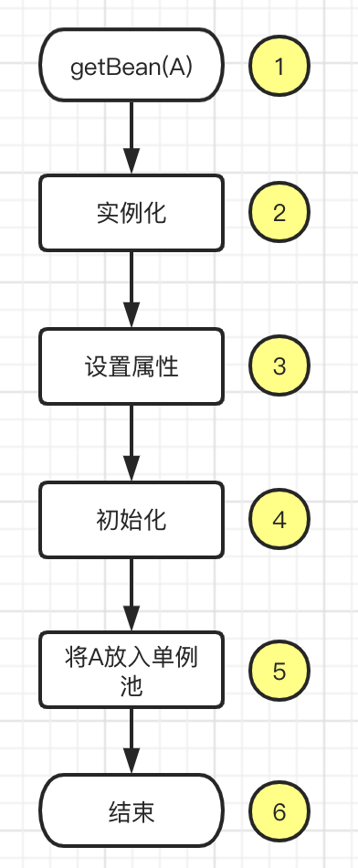
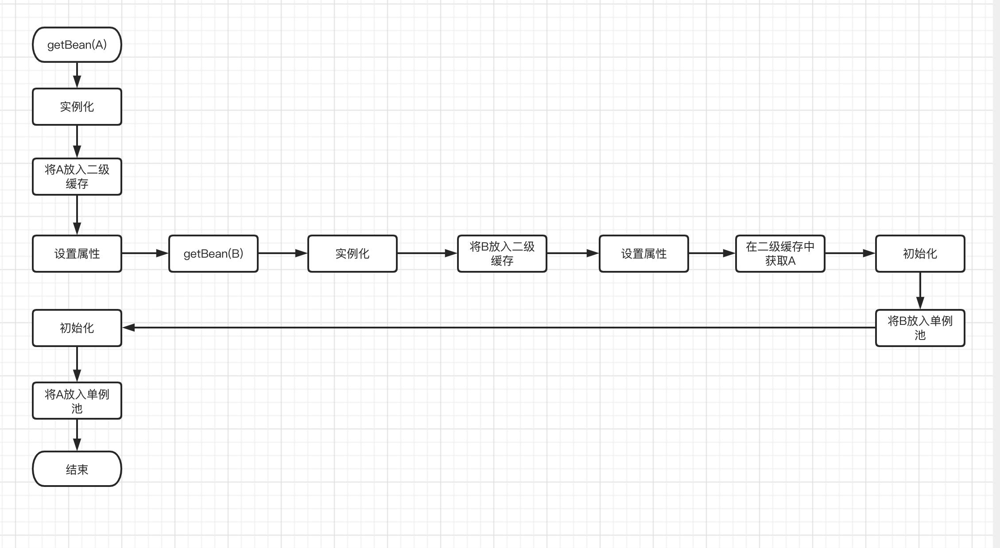
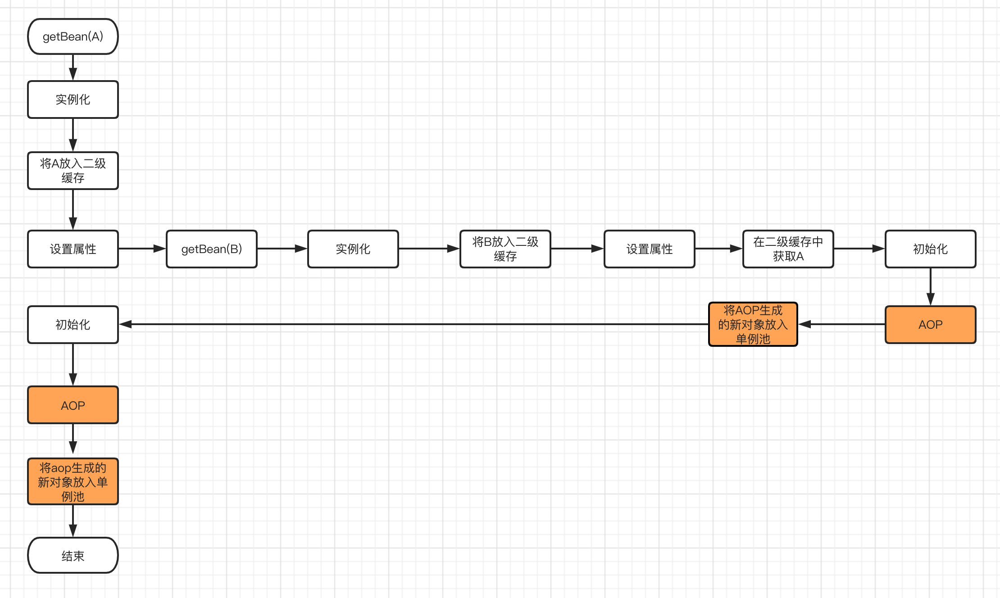

- AQS 万字图文全面解析.md
- Docker 镜像构建原理及源码分析.md
- ElasticSearch 小白从入门到精通.md
- JVM CPU Profiler技术原理及源码深度解析.md
- JVM 垃圾收集器.md
- JVM 面试的 30 个知识点.md
- Java IO 体系、线程模型大总结.md
- Java NIO浅析.md
- Java 面试题集锦（网络篇）.md
- Java-直接内存 DirectMemory 详解.md
- Java中9种常见的CMS GC问题分析与解决（上）.md
- Java中9种常见的CMS GC问题分析与解决（下）.md
- Java中的SPI.md
- Java中的ThreadLocal.md
- Java线程池实现原理及其在美团业务中的实践.md
- Java魔法类：Unsafe应用解析.md
- Kafka 源码阅读笔记.md
- Kafka、ActiveMQ、RabbitMQ、RocketMQ 区别以及高可用原理.md
- MySQL · 引擎特性 · InnoDB Buffer Pool.md
- MySQL · 引擎特性 · InnoDB IO子系统.md
- MySQL · 引擎特性 · InnoDB 事务系统.md
- MySQL · 引擎特性 · InnoDB 同步机制.md
- MySQL · 引擎特性 · InnoDB 数据页解析.md
- MySQL · 引擎特性 · InnoDB崩溃恢复.md
- MySQL · 引擎特性 · 临时表那些事儿.md
- MySQL 主从复制 半同步复制.md
- MySQL 主从复制 基于GTID复制.md
- MySQL 主从复制.md
- MySQL 事务日志(redo log和undo log).md
- MySQL 亿级别数据迁移实战代码分享.md
- MySQL 从一条数据说起-InnoDB行存储数据结构.md
- MySQL 地基基础：事务和锁的面纱.md
- MySQL 地基基础：数据字典.md
- MySQL 地基基础：数据库字符集.md
- MySQL 性能优化：碎片整理.md
- MySQL 故障诊断：一个 ALTER TALBE 执行了很久，你慌不慌？.md
- MySQL 故障诊断：如何在日志中轻松定位大事务.md
- MySQL 故障诊断：教你快速定位加锁的 SQL.md
- MySQL 日志详解.md
- MySQL 的半同步是什么？.md
- MySQL中的事务和MVCC.md
- MySQL事务_事务隔离级别详解.md
- MySQL优化：优化 select count().md
- MySQL共享锁、排他锁、悲观锁、乐观锁.md
- MySQL的MVCC（多版本并发控制）.md
- QingStor 对象存储架构设计及最佳实践.md
- RocketMQ 面试题集锦.md
- SnowFlake 雪花算法生成分布式 ID.md
- Spring Boot 2.x 结合 k8s 实现分布式微服务架构.md
- Spring Boot 教程：如何开发一个 starter.md
- Spring MVC 原理.md
- Spring MyBatis和Spring整合的奥秘.md
- Spring 帮助你更好的理解Spring循环依赖.md
- Spring 循环依赖及解决方式.md
- Spring中眼花缭乱的BeanDefinition.md
- Vert.x 基础入门.md
- eBay 的 Elasticsearch 性能调优实践.md
- 不可不说的Java“锁”事.md
- 互联网并发限流实战.md
- 从ReentrantLock的实现看AQS的原理及应用.md
- 从SpringCloud开始，聊微服务架构.md
- 全面了解 JDK 线程池实现原理.md
- 分布式一致性理论与算法.md
- 分布式一致性算法 Raft.md
- 分布式唯一 ID 解析.md
- 分布式链路追踪：集群管理设计.md
- 动态代理种类及原理，你知道多少？.md
- 响应式架构与 RxJava 在有赞零售的实践.md
- 大数据算法——布隆过滤器.md
- 如何优雅地记录操作日志？.md
- 如何设计一个亿级消息量的 IM 系统.md
- 异步网络模型.md
- 当我们在讨论CQRS时，我们在讨论些神马？.md
- 彻底理解 MySQL 的索引机制.md
- 最全的 116 道 Redis 面试题解答.md
- 有赞权限系统(SAM).md
- 有赞零售中台建设方法的探索与实践.md
- 服务注册与发现原理剖析（Eureka、Zookeeper、Nacos）.md
- 深入浅出Cache.md
- 深入理解 MySQL 底层实现.md
- 漫画讲解 git rebase VS git merge.md
- 生成浏览器唯一稳定 ID 的探索.md
- 缓存 如何保证缓存与数据库的双写一致性？.md
- 网易严选怎么做全链路监控的？.md
- 美团万亿级 KV 存储架构与实践.md
- 美团点评Kubernetes集群管理实践.md
- 美团百亿规模API网关服务Shepherd的设计与实现.md
- 解读《阿里巴巴 Java 开发手册》背后的思考.md
- 认识 MySQL 和 Redis 的数据一致性问题.md
- 进阶：Dockerfile 高阶使用指南及镜像优化.md
- 铁总在用的高性能分布式缓存计算框架 Geode.md
- 阿里云PolarDB及其共享存储PolarFS技术实现分析（上）.md
- 阿里云PolarDB及其共享存储PolarFS技术实现分析（下）.md
- 面试最常被问的 Java 后端题.md
- 领域驱动设计在互联网业务开发中的实践.md
- 领域驱动设计的菱形对称架构.md
- 高效构建 Docker 镜像的最佳实践.md
Spring 循环依赖及解决方式
循环依赖
Spring 有一个经典的问题，就是如何解决循环依赖，话不多说，直接开始，
@Component
public Class A {
@Autowired private B b;
}
@Component
public Class B {
@Autowired private A b;
}
spring bean 的生命周期

获取一个 Bean 的操作从 getBean(String name) 开始主要步骤为
1、getBean(String name)
2、实例化对象 A a = new A(); 此时执行构造方法的依赖注入
3、设置对象属性 populateBean(beanName, mbd, instanceWrapper); 此时执行属性的依赖注入
4、执行初始化方法 initializeBean(beanName, exposedObject, mbd); 此时执行 bean 的 initialize 方法
5、将生成好的 bean 对象添加到 单例池（一个 hashMap，保证单例 bean 在 context 仅仅存在一个对象）
6、结束
伪代码如下：
public Object getBean(String name) {
//省略根据name获取A的过程
A a = new A();
a.initialze();
singletonObjects.put(name, a);
return a;
}
A 依赖 B 的情况下的加载流程

伪代码如下：
public Object getBean(String name) {
//省略根据name获取A的过程
A a = new A(); //实例化A
a.setB(getBean("B")); //设置属性，发现a依赖于b，所以先加载b，加载B完成以后再继续加载a
a.initialze(); //执行初始化方法
singletonObjects.put(name, a); //将a放入单例池中
return a;
}
A、B 互相依赖的加载流程

以上就会出现一个问题，由于 a、b 都是单例 Bean，加载 b 的时候，到了上图中标红的阶段后，b 依赖注入的 a 的引用应该是通过 getBean(A) 得到的引入，如果还是以上的逻辑，又再一次走入了 A 的创建逻辑，此时就是发生了循环依赖。下面我们就开始介绍 Spring 是如何解决循环依赖的。
一级缓存：单例池 singletonObjects
private final Map<String, Object> singletonObjects = new ConcurrentHashMap<>(256);
我们都知道如果是单例的 Bean，每次 getBean(beanName)返回同一个 bean，也就是在整个 ApplicationContext 里面，仅有一个单例 Bean，单例 Bean 创建完成后就放在 singletonObjects 这个 Map 里面，这就是一级缓存。此时说的“创建完成”指的是图一的第 6 步骤，图三中 getBean("B") 的过程中，a 是没有加入到一级缓存中，所以在 getBean("B") 的流程中，b 依赖了 a，此时 b 是找不到 a 对象的。依然会无法解决循环引用的问题。
二级缓存：earlySingletonObjects
private final Map<String, Object> earlySingletonObjects = new HashMap<>(16);
这个时候我们考虑再引入一个 Map 存放引用，earlySingletonObjects 这个 map 我们打算存放提前暴露 bean 的引用，实例化以后，我们就把对象放入到 earlySingletonObjects 这个 map 中，这样在 加载 b 的过程中，b.setA(getBean("a")),我们就可以在 earlySingletonObjects 拿到 a 的引用，此时 a 仅仅经过了实例化，并没有设置属性。流程如下：

1、getBean(A)
2、A a = new A();
3、earlySingletonObjects.put("a", a); 将 A 放入二级缓存
3、设置 A 的属性
4、getBean(B)
5、设置 B 的属性，发现 B 依赖 A，从二级缓存中获取 A
6、加载 B 成功
7、将 B 放入一级缓存
8、继续加载 A
9、加载 A 完成，将 A 放入单例池
到目前为止，发现使用二级缓存似乎就能解决我们的问题。看起来很美好，这是 Spring IOC 的特性，Spring 的另一大特性是 AOP 面向切面编程，动态增强对象，不管使用 JDK 的动态代理和 Cglib 动态代理，都会生成一个全新的对象。下图中我标出了 AOP 动态增强的位置。

此时就会出现一个问题，因为经过 AOP 以后，生成的是增强后的 bean 对象，也就是一个全新的对象，我们可以看到经过图中的流程后，单例池中会存在两个 bean：增强后的 a、b 对象，此时 a 对象中依赖的 b 为增强后的，而 b 对象依赖的 a 是为原始对象，未增强的。所以使用二级缓存解决不了循环依赖中发生过 aop 的引用问题。
三级缓存：singletonFactories
private final Map<String, ObjectFactory<?>> singletonFactories = new HashMap<>(16);
为了解决二级缓存中 AOP 生成新对象的问题，Spring 中的解决方案是：提前 AOP，如果我们能够提前 AOP 就能解决上面的问题了，提前 AOP 指的就是，在 加载 B 的流程中，如果发生了循环依赖，就是说 b 又依赖了 a，我们就要对 a 执行 aop，提前获取增强以后的 a 对象，这样 b 对象依赖的 a 对象就是增强以后的 a 了。三级缓存的 key 是 beanName，value 是一个 lambda 表达式，这个 lambda 表达式的作用就是进行提前 AOP。
下面是加入了三级缓存和 AOP 的流程图，PS：可能会有点乱。。。。。。

上面就是三级缓存的作用，其中有个三级缓存到二级缓存的升级过程，这个非常重重要，这个主要是防止重复 aop。好的，写到这里，我们对 Spring 如何使用三级缓存解决循环依赖的流程已经大概清楚了，下面分析一下源码。
源码解析：
1、 doGetBean
protected <T> T doGetBean(final String name, @Nullable final Class<T> requiredType,@Nullable final Object[] args, boolean typeCheckOnly) throws BeansException {
Object bean;
//首先先尝试获取bean，如果加载过就不会在重复加载了
Object sharedInstance = getSingleton(beanName);
//省略细节
if(sharedInstance != null) {
bean = getObjectForBeanInstance(sharedInstance, name, beanName, null);
} else {
//根据beanName获取 beanDefinition 对象
final RootBeanDefinition mbd = getMergedLocalBeanDefinition(beanName);
if (mbd.isSingleton()) {
//单例bean的加载逻辑
sharedInstance = getSingleton(beanName, () -> {
try {
return createBean(beanName, mbd, args);
}
catch (BeansException ex) {
// Explicitly remove instance from singleton cache: It might have been put there
// eagerly by the creation process, to allow for circular reference resolution.
// Also remove any beans that received a temporary reference to the bean.
destroySingleton(beanName);
throw ex;
}
});
else if (mbd.isPrototype()) {
//原型域bean的加载逻辑
Object prototypeInstance = null;
try {
beforePrototypeCreation(beanName);
prototypeInstance = createBean(beanName, mbd, args);
}
finally {
afterPrototypeCreation(beanName);
}
bean = getObjectForBeanInstance(prototypeInstance, name, beanName, mbd);
}
bean = getObjectForBeanInstance(sharedInstance, name, beanName, mbd);
}
}
return (T)bean;
}
2、 第 1 步中 getSingleton(beanName)
public Object getSingleton(String beanName) {
return getSingleton(beanName, true);
}
protected Object getSingleton(String beanName, boolean allowEarlyReference) {
//首先去一级缓存中获取如果获取的到说明bean已经存在，直接返回
Object singletonObject = this.singletonObjects.get(beanName);
//如果一级缓存中不存在，则去判断该bean是否在创建中，如果该bean正在创建中，就说明了，这个时候发生了循环依赖
if (singletonObject == null && isSingletonCurrentlyInCreation(beanName)) {
synchronized (this.singletonObjects) {
//如果发生循环依赖，首先去二级缓存中获取，如果获取到则返回，这个地方就是获取aop增强以后的bean
singletonObject = this.earlySingletonObjects.get(beanName);
//如果二级缓存中不存在，且允许提前访问三级引用
if (singletonObject == null && allowEarlyReference) {
//去三级缓存中获取
ObjectFactory<?> singletonFactory = this.singletonFactories.get(beanName);
if (singletonFactory != null) {
//如果三级缓存中的lambda表达式存在，执行aop，获取增强以后的对象，为了防止重复aop，将三级缓存删除，升级到二级缓存中
singletonObject = singletonFactory.getObject();
this.earlySingletonObjects.put(beanName, singletonObject);
this.singletonFactories.remove(beanName);
}
}
}
}
return singletonObject;
}
3、 第 1 步中 单例 bean 的加载逻辑
sharedInstance = getSingleton(beanName, () -> {
try {
return createBean(beanName, mbd, args);
}
catch (BeansException ex) {
// Explicitly remove instance from singleton cache: It might have been put there
// eagerly by the creation process, to allow for circular reference resolution.
// Also remove any beans that received a temporary reference to the bean.
destroySingleton(beanName);
throw ex;
}
});
//获取bean
public Object getSingleton(String beanName, ObjectFactory<?> singletonFactory) {
Assert.notNull(beanName, "Bean name must not be null");
synchronized (this.singletonObjects) {
Object singletonObject = this.singletonObjects.get(beanName);
if (singletonObject == null) {
//将当前bean加入到 singletonsCurrentlyInCreation 这个map中，这个map里面是正在创建中的bean，用于判断循环依赖
beforeSingletonCreation(beanName);
//执行上面方法的lambda表达式，创建bean
singletonObject = singletonFactory.getObject();
//将 singletonsCurrentlyInCreation 里面的这个bean删除
afterSingletonCreation(beanName);
//bean创建完成，将bean加入到单例池中
addSingleton(beanName, singletonObject);
}
return singletonObject;
}
}
4、核心方法，加载 bean
//createBean(beanName, mbd, args); 方法 创建bean的核心逻辑
// 最终调用的是 AbstractAutowiredCapableBeanFactory.createBean 这个方法
protected Object doCreateBean(final String beanName, final RootBeanDefinition mbd, final @Nullable Object[] args)
throws BeanCreationException {
// Instantiate the bean.
BeanWrapper instanceWrapper = null;
if (mbd.isSingleton()) {
instanceWrapper = this.factoryBeanInstanceCache.remove(beanName);
}
if (instanceWrapper == null) {
instanceWrapper = createBeanInstance(beanName, mbd, args);
}
//实例化，操作等同于 new 一个bean对象
final Object bean = instanceWrapper.getWrappedInstance();
Class<?> beanType = instanceWrapper.getWrappedClass();
//是否允许提前暴露对象，如果当前bean为单例，且允许循环引用，与当前bean正在创建中，则允许提前暴露
boolean earlySingletonExposure = (mbd.isSingleton() && this.allowCircularReferences &&
isSingletonCurrentlyInCreation(beanName));
if (earlySingletonExposure) {
//将当前bean放入三级缓存中
addSingletonFactory(beanName, () -> getEarlyBeanReference(beanName, mbd, bean));
}
// Initialize the bean instance.
Object exposedObject = bean;
try {
//开始设置属性，当前bean依赖于其它bean，则需要 doGetBean 创建以来的bean，如果依赖的bean不存在，则首先创建依赖的bean，循环依赖发生的位置
populateBean(beanName, mbd, instanceWrapper);
//执行初始化方法和aop增强，此时如果有aop，exposedObject就是增强以后的对象了,但是有一点需要注意，如果提前执行了aop，则exposedObject不会再次执行aop了
exposedObject = initializeBean(beanName, exposedObject, mbd);
}
catch (Throwable ex) {
throw ex;
}
if (earlySingletonExposure) {
//这个我们可以看上面getSingleton方法，该方法的参数为false，就说明只允许去一级缓存和二级缓存获取，此时bean在创建中，一级缓存一定没有，就看二级缓存能不能获取到了
Object earlySingletonReference = getSingleton(beanName, false);
if (earlySingletonReference != null) {
//如果二级缓存获取到了，则说明提前执行了aop
if (exposedObject == bean) {
//exposedObject就是要放入单例池中的对象，如果提前执行了aop，则将exposedObject对象替换为aop以后的对象
//这个地方可能有一些疑问，exposedObject是原始对象执行过 依赖注入，而earlySingletonReference是提前执行aop的对象，没有执行过依赖注入，是不是有什么问题呢？
//答案是不会，因为earlySingletonReference作为exposedObject的增强对象，内部是持有原对象的引用的
exposedObject = earlySingletonReference;
}
else if (!this.allowRawInjectionDespiteWrapping && hasDependentBean(beanName)) {
String[] dependentBeans = getDependentBeans(beanName);
Set<String> actualDependentBeans = new LinkedHashSet<>(dependentBeans.length);
for (String dependentBean : dependentBeans) {
if (!removeSingletonIfCreatedForTypeCheckOnly(dependentBean)) {
actualDependentBeans.add(dependentBean);
}
}
if (!actualDependentBeans.isEmpty()) {
throw new BeanCurrentlyInCreationException(beanName,
"Bean with name '" + beanName + "' has been injected into other beans [" +
StringUtils.collectionToCommaDelimitedString(actualDependentBeans) +
"] in its raw version as part of a circular reference, but has eventually been " +
"wrapped. This means that said other beans do not use the final version of the " +
"bean. This is often the result of over-eager type matching - consider using " +
"'getBeanNamesOfType' with the 'allowEagerInit' flag turned off, for example.");
}
}
}
}
// Register bean as disposable.
try {
registerDisposableBeanIfNecessary(beanName, bean, mbd);
}
catch (BeanDefinitionValidationException ex) {
throw new BeanCreationException(
mbd.getResourceDescription(), beanName, "Invalid destruction signature", ex);
}
return exposedObject;
}
//下面我们看一下 上面方法中的 将bean放入三级缓存提前暴露的方法
//addSingletonFactory(beanName, () -> getEarlyBeanReference(beanName, mbd, bean));
protected void addSingletonFactory(String beanName, ObjectFactory<?> singletonFactory) {
Assert.notNull(singletonFactory, "Singleton factory must not be null");
synchronized (this.singletonObjects) {
if (!this.singletonObjects.containsKey(beanName)) {
this.singletonFactories.put(beanName, singletonFactory);
this.earlySingletonObjects.remove(beanName);
this.registeredSingletons.add(beanName);
}
}
}
通过对上面源码的解析，看到了 bean 加载的整个生命周期，和三级缓存的作用。
比如：
1、如何判断是否存在循环依赖：使用 isSingletonCurrentlyInCreation(beanName) 这个方法
2、三级缓存如何升级到二级缓存的：参考第二步
3、提前执行 AOP：这个东西是在 获取三级缓存的时候执行的，里面有一个 getEarlyBeanReference(beanName, mbd, bean) 这个 lambda 表达式，这个方法就是提前执行 aop，具体可以参考 AbstractAutoProxyCreator
4、如果提前执行 AOP，则需要替换原对象
文字总结 A、B 循环依赖
1、getBean(A) 先去单例池获取，单例池不存在，二级缓存获取，二级缓存不存在且允许提前访问，三级缓存中取，此时返回为空，开始加载 A
2、singletonsCurrentlyInCreation(A) 将 A 放入正在创建的 Map 中
3、new A(); 实例化 A
4、提前暴露 A，将 A 放入三级缓存，addSingletonFactory(beanName, () -> getEarlyBeanReference(beanName, mbd, bean));
5、设置属性 populateBean(beanName, mbd, instanceWrapper);
6、发现 A 依赖 B，需要先创建 B
7、getBean(B)
8、先去单例池获取 B，单例池不存在，二级缓存获取，二级缓存不存在且允许提前访问，三级缓存中取，此时返回为空，开始加载 B
9、将 B 放入 singletonsCurrentlyInCreation() 的 Map 中
10、new B() 实例化 B
11、将 B 放入三级缓存 addSingletonFactory(beanName, () -> getEarlyBeanReference(beanName, mbd, bean));
12、设置属性 populateBean(beanName, mbd, instanceWrapper);
13、发现 B 依赖 A
14、getBean(A)
15、发现三级缓存中存在 A，getEarlyBeanReference(A, mbd, bean) 获取 A，同时把 A 放入二级缓存，删除三级缓存
16、执行 B 的 initializeBean 方法，执行 aop，获取增强以后的引用
17、B 创建完了，将 B 放入单例池冲
18、继续执行第 7 步，返回的 getBean(B)就是创建好的 B
19、接下来 A 初始化
20、因为 A 的三级缓存中的 getEarlyBeanReference(beanName, mbd, bean) 被 B 已经执行过了
21、A 就能从二级缓存中获取自己的引用
22、如果发现引用变了，此时 A 就指向二级缓存中的引用
23、将 A 放出单例池中
24、删除二级缓存和三级缓存